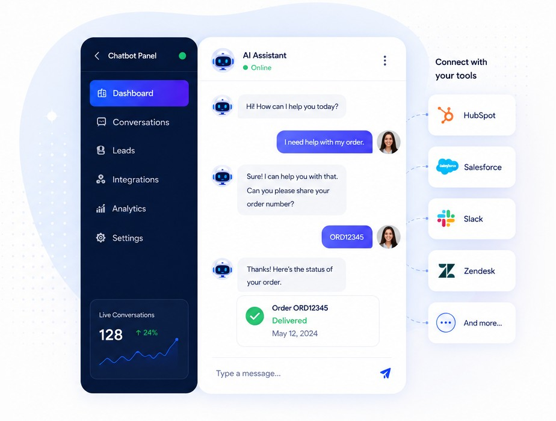
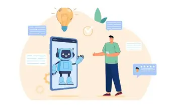
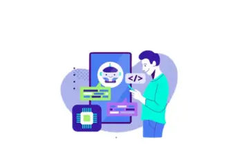
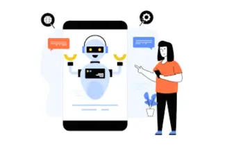
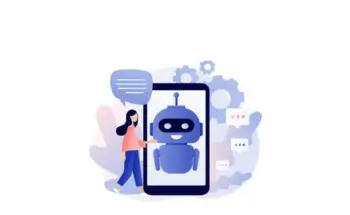
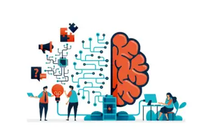
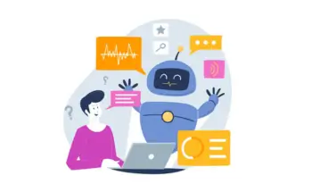

Happy Customers
We have clients from all over the world, including US, UK, Australia, Middle East, Canada and India
Unlock seamless collaboration across your digital ecosystem with our expert chatbot integration services. Our enterprise-grade solutions handle customer support, qualify leads, and personalize engagement, enabling you to significantly increase efficiency and enhance customer satisfaction.
Book a Free ConsultationAI That understands, engages, and resolves.
Connect with your favorite tools.
Automate workflows and save time.
Faster responses. Better experiences.

Chatbot integration services connect conversational AI tools (chatbots) with a company's existing digital infrastructure, including sites, android or ios apps, CRMs, and other business components. With these services, data and communications flow efficiently, facilitating automation and enhancing user interactions. By integrating API, we assure that your AI-powered chatbot acts as an integrated extension of your operations, not just a separate tool.
This strategic approach to automation unlocks significant value across various business functions. Common use cases include:
Instantly resolve common queries, guide users to resources, and escalate complex issues to human agents, reducing wait times and improving satisfaction.
Engage website visitors proactively, ask qualifying questions, and capture valuable lead information directly into your CRM system without manual data entry.
Offer product recommendations, track orders, and process returns through conversational AI, creating a frictionless shopping experience.
Assist employees with HR inquiries, IT support requests, and access to internal knowledge bases, boosting organizational productivity.
Free Consultation
Integrating AI-powered chatbots is no longer a luxury-it's a strategic necessity for businesses aiming to scale efficiently and compete effectively. By connecting automated conversational tools with your core systems, you unlock transformative improvements in customer engagement, operational workflow, and profitability.
Companies leveraging chatbot integration report a significant competitive advantage by enhancing both front-end and back-end processes.
Free your support teams from handling repetitive inquiries. Chatbots can instantly resolve up to 80% of common customer questions, providing 24/7 assistance without increasing headcount. This allows your human agents to focus on high-value, complex issues that require a personal touch.
Engage website visitors proactively and convert interest into action. An integrated chatbot can capture visitor information, ask crucial qualifying questions, and schedule meetings in real-time. This automated process can increase lead generation rates by over 55%, ensuring no opportunity is missed.


Eliminate manual data entry and maintain a single source of truth. Chatbot integration automatically syncs every conversation, lead detail, and support ticket directly into your CRM. This keeps customer profiles consistently updated, empowering your sales and marketing teams with accurate, real-time data.
Meet your customers wherever they are-on your website, on social media, or via messaging apps like WhatsApp. A centrally managed chatbot solution provides a consistent and unified brand experience across all digital channels, strengthening customer loyalty and recognition.
Drive down operational expenses while improving service quality. By automating tasks traditionally handled by human agents, businesses can reduce customer service costs by as much as 30%. This efficiency allows you to reallocate budget toward growth-focused initiatives.
We deliver end-to-end chatbot integration services designed to connect, automate, and optimize your business processes. Our solutions are tailored to fit your unique technology stack, ensuring seamless performance and a high return on investment. From initial strategy to deployment and ongoing support, we provide the expertise needed to transform your customer and employee interactions.

We embed intelligent chatbots directly into your website to engage visitors, answer questions, and capture leads 24/7. Our integration ensures the chatbot aligns with your brand identity and provides a frictionless user experience, converting passive traffic into active opportunities.

Synchronize your conversational data with your core business systems. We integrate chatbots with leading CRM and ERP platforms like Salesforce, HubSpot, SAP, and Oracle, automating data entry, updating customer records, and providing your teams with real-time insights for more effective decision-making.

Extend your reach and engage customers on their preferred platforms. We deploy and manage chatbot solutions for WhatsApp, Facebook Messenger, and other social media channels, enabling you to deliver consistent, automated support and marketing messages across your entire digital footprint.

Leverage the power of advanced artificial intelligence and Natural Language Processing (NLP) to create truly intelligent conversations. We build and integrate sophisticated bots that understand user intent, manage complex dialogues, and learn from interactions to continuously improve performance.

Enhance the online shopping experience and drive sales. Our e-commerce chatbot solutions integrate with platforms like Shopify, Magento, and WooCommerce to provide personalized product recommendations, track orders, process returns, and assist customers throughout their buying journey.

For unique operational needs, we create fully customize chatbot integrations. Using a robust, API-first approach, we connect chatbots to any proprietary software, database, or third-party application. This ensures your automated solution is perfectly aligned with your specific workflows and technical requirements.
Cloud Converge provides specialized chatbot integration solutions tailored to the unique operational demands and regulatory landscapes of various sectors. We empower organizations to enhance efficiency, improve customer engagement, and drive growth by deploying intelligent automation where it matters most. Our expertise spans across key industries, ensuring your chatbot solution is not just a tool, but a strategic asset.
In the competitive world of online retail, customer experience is paramount. We integrate chatbots with your e-commerce platform to provide 24/7 shopping assistance, personalized product recommendations, real-time order tracking, and seamless return processing. This reduces cart abandonment, increases conversion rates, and builds lasting customer loyalty.
Navigating patient communication and administrative tasks requires security and precision. Our HIPAA-compliant chatbot integrations automate appointment scheduling, answer frequently asked patient questions, send medication reminders, and streamline patient intake. This frees up administrative staff to focus on providing quality care while ensuring patient data remains secure.
From admissions to student support, educational institutions manage a high volume of inquiries. We deploy chatbots to guide prospective students through the application process, provide information on courses and financial aid, and offer current students instant access to campus resources. This improves the student experience and optimizes administrative workflows.
Success in real estate hinges on responsiveness and lead management. Our chatbot solutions engage website visitors instantly, qualifying potential buyers and sellers, scheduling property viewings, and answering questions about listings. By integrating with your CRM, we ensure every lead is captured and nurtured efficiently, helping agents close more deals.
Efficiency and supply chain communication are critical in manufacturing. We implement chatbot integrations to automate internal support for employees, provide real-time updates on production status, manage supplier inquiries, and streamline parts ordering. This enhances operational visibility and reduces downtime by making critical information instantly accessible.
For SaaS companies, user onboarding and technical support are key to retention. We integrate AI-powered chatbots to guide new users through your software, provide instant answers to technical questions, create support tickets automatically, and gather user feedback. This improves customer satisfaction, reduces churn, and lowers the burden on your support team.
Our structured and transparent integration process ensures your chatbot solution is delivered on time, within budget, and perfectly aligned with your business objectives. We manage every phase of the project, from initial discovery to post-launch optimization, providing a seamless, collaborative experience that guarantees enterprise-grade results.
We begin with a deep dive into your business goals, operational workflows, and technical environment. Our team collaborates with your stakeholders to define clear objectives, identify key use cases, and document the specific requirements for your chatbot integration. This foundational step ensures the final solution is built to solve your most critical challenges.
Based on the analysis, we design a comprehensive solution architecture. This technical blueprint outlines the integration pathways, data flows, and security protocols. We select the optimal technology stack and plan for scalability, ensuring the chatbot will integrate flawlessly with your existing CRM, ERP, and other essential systems.
With a solid plan in place, our Experts begin building the chatbot. This phase involves creating the conversational flows, programming the business logic, and building the bot's core functionalities. For AI-powered bots, we train the Natural Language Processing models to accurately understand user intent and context.
This is where the system comes together. We execute the integration plan, using robust APIs to connect the chatbot to your specified software and databases. Our team ensures secure and reliable data synchronization, allowing the chatbot to access information and trigger actions within your other business platforms in real time.
Before going live, the integrated solution undergoes rigorous testing in a staging environment. We test for functionality, performance, security, and user experience to identify and resolve any issues. Once the solution meets all quality assurance standards, we manage a smooth deployment into your live production environment with minimal disruption to your operations.
Our commitment doesn't end at launch. We continuously monitor the chatbot's performance, user interactions, and system health. Using data and analytics, we identify opportunities for improvement, refine conversational flows, and update the bot to adapt to changing business needs, ensuring you achieve long-term value and a strong return on investment.
We have clients from all over the world, including US, UK, Australia, Middle East, Canada and India
We have developed numerous complete web & mobile app for our clients across the globe.
We as an organization believe that client satisfaction begins from requirements definition phase to design, feedback cycle and golive.
We operate on all the top technology stacks such as .NET Core, MERN, MEAN, React Native, Swift, Java and many more.
Partnering with Cloud Converge means choosing a team dedicated to technical excellence and tangible business outcomes. We go beyond simple implementation to deliver robust, scalable, and secure chatbot solutions that integrate deeply into your operational framework. Our focus is on building a strategic asset that drives efficiency and growth for your enterprise.
Protect your sensitive data with our security-first approach. We implement end-to-end encryption, adhere to strict data privacy protocols, and ensure your chatbot integration complies with industry standards like GDPR and HIPAA, giving you complete peace of mind.
Build for the future with an architecture designed for growth. Our solutions are engineered to handle increasing conversation volumes and expanding functional requirements, ensuring your chatbot performs reliably as your business scales.
Transform your unique processes into automated, efficient workflows. We don't offer one-size-fits-all solutions; instead, we map our integration strategy to your specific operational needs, automating complex tasks to unlock maximum productivity.
Ensure long-term success with our dedicated post-deployment support. Our team provides continuous monitoring, performance tuning, and proactive maintenance to keep your chatbot running at peak efficiency and adapt to evolving business demands.
Deploy with confidence, knowing your solution is built for the enterprise environment. We manage complex integrations with your core business systems, including CRMs and ERPs, ensuring seamless data flow and a smooth rollout with minimal disruption to your operations.
Stop letting manual processes and repetitive inquiries limit your growth. Integrating an AI-powered chatbot is the first step toward scaling your customer support, accelerating your sales cycle, and unlocking new operational efficiencies. Let our experts show you how a customize-integrated chatbot can deliver a measurable return on investment and provide a competitive edge.
Take the next step towards a more automated and efficient future. Schedule a complimentary consultation with our integration specialists to discuss your specific needs or request a live demo to see our solutions in action.
Chatbot integration services connect intelligent virtual assistants to your existing business systems, like your website, CRM, or support software. Instead of using a separate chat window, these services enable a bot to answer questions, process orders, or schedule appointments automatically. Integration of website chatbots creates a seamless user experience across platforms.
Integrating a chatbot transforms customer support by providing instant, 24/7 answers to commonly asked questions. When a customer contacts the website, the bot can instantly access their order history or account details to resolve issues without human assistance. This significantly reduces waiting times and maintains customer satisfaction.
Yes, absolutely! Connecting your bot to your CRM or ERP is one of the most effective ways to maximise its value. Once you set up AI chatbot integration, the bot can instantly pull customer profiles, check inventory levels, or update sales records in real-time.
The timeline depends heavily on the complexity of your system and what you want the bot to do. Chatbot integration will take a few days to set up and test. However, if you require deep integrations with custom CRMs, payment gateways, or multiple third-party tools, the process can take a few weeks.
You can connect chatbots to almost any modern software your business relies on. Common connections include e-commerce platforms such as Shopify and WooCommerce, customer service hubs such as Zendesk, and major CRMs such as Salesforce and HubSpot. As long as your software has an API, our chatbot integration services can usually build a bridge to it.
AI is not strictly required, but it substantially boosts your bot's helpfulness. Basic rule-based bots follow pre-set menus and are suitable for simple, easy-to-use workflows. However, AI chatbot integration uses natural language processing to understand the intent behind a customer's question, even if they use slang or typos.
Security is a primary concern when connecting updated software to your business system. We use industry-standard encryption protocols to ensure that all data passing between the chatbot and your database remains completely private and secure.
The cost varies based on the features you need and the complexity of the systems we are connected to. Basic setup for a standard website might be a small, one-time project fee. On the other hand, complex chatbot development that integrates with custom ERPs, advanced AI models, and multiple social channels requires greater investment. We provide transparent, custom quotes after understanding your specific goals.
Yes, they certainly can! Meeting your customers where they already spend their time is an effective strategy. You can link your bot to WhatsApp, Facebook Messenger, and Instagram. Centralising your communication channels through unified chatbot integration services ensures your brand delivers a consistent, helpful experience across every social platform.
Nearly any business that interacts with customers online can see huge benefits. E-commerce stores use them to recover abandoned carts and track shipments automatically. Real estate agencies use them to qualify leads and schedule property viewings at any hour. Healthcare providers rely on them for appointment bookings and clinic-related questions. Even B2B software companies utilise AI chatbot integration to troubleshoot user issues and route complex tickets to the appropriate technical teams.


"Good experience overall. My 3rd project with them overall. Will highly recommend using them."

Tom WymanWeb Designer
"Its been a pleasure to work with CloudConverge.io team. They have a great team, including their Customer Success Manager who was great help to us. We have been doing great during our peak sale season, without any hickup. Great job guys."

Richard HellerCEO
"We are really happy with how quickly we were able to launch the project, they had a really seamless process of getting our existing database and agents onboard, manage their leads & properties. We will definitely recommend using them for any web solution project. They have a great team in place with a talent to understand business intricacies."

Samuel CorrensLong Island RE
"We were looking to modern a lot of aspects within our organization including migration to Business Central as ERP, implementing Microsoft 365, Cloud Services and Web Development. We at Kabu Projects and Atmos are happy to refer Cloud Converge team and all IT services. They are well-versed with the best practices, have a good project management and software team."
Kabu Projects
"We are a non-profit were organizing a large event which includes delegates and attendees from all over the globe. The way Cloud Converge team handled our web presence, online payment system was truly exceptional. The entire process including site design, implementation of CRM, integration with partners, live dashboards were all delivered in record time. Most of all, because of the high footfall on the event, we had thousands of registration on launch itself, the way the entire system worked effortlessly was a great experience for all stakeholders. We have done similar launches in the past with varied experiences, no doubt, what Cloud Converge delivered is something we will continue to use for years to come."

Entrepreneur's Organization Gurgaon
"We are very happy with the project delivered by the CC team. The entire development process has worked seamlessly for us, with regular updates, thorough testing of deliverables, great ideas throughout the development process."

Barry SarnoffCEO